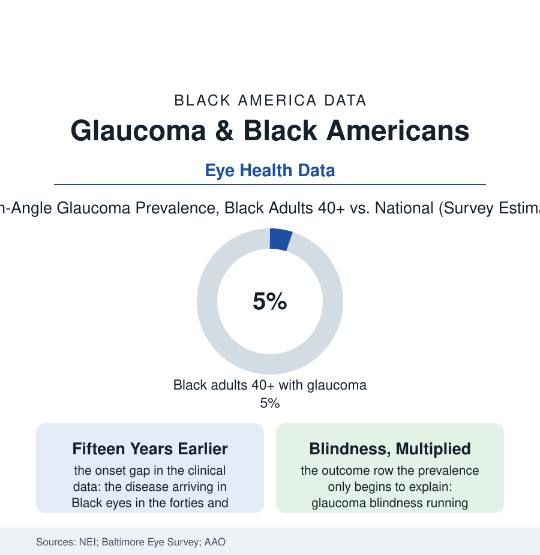

Black Public Health
The Silent Thief: Glaucoma in the Black Population
Glaucoma steals sight from the edges inward, without pain, for years — and it comes earlier, faster, and blinder for Black Americans than for any other group in the exam data. The glaucoma file.

Glaucoma is the cruelest of the common eye diseases precisely because it is painless and patient: the pressure damages the optic nerve from the periphery inward, the brain fills the gaps, and the patient learns the diagnosis — if she learns it — after sight that cannot be returned is already gone. In the population data, no group carries this disease earlier, faster, or more blindly than Black Americans. This article reads the glaucoma file.
Earlier, Faster, and Under-Screened
The epidemiology is among the most consistent in the eye literature, founded on the great population exams — the Baltimore Eye Survey's door-to-door measurements standing as this file's bedrock: open-angle glaucoma's prevalence in Black adults above forty running several times the white rate in the same neighborhoods' data, the age of onset shifted a decade and more earlier, the progression in the treatment cohorts faster at the same measured pressures, and the blindness outcomes multiplied accordingly in the national estimates — glaucoma standing as the leading cause of irreversible blindness in Black America in the NEI's accounting. The biology rows argue their causes (the optic nerve head's structure, the cornea's thickness confounding the pressure reading — the tonometer's number systematically under-measuring risk in the thinner corneas this population averages, a calibration footnote with a body count), but the system's rows are the actionable ones: the disease is found by examination, not by symptoms, so its map is the map of eye-care access itself — the comprehensive exam rates of the vision file (the dilated exam's five-year reach in the survey data running lowest in the rows that need it soonest), the optometry deserts of the workforce file, the Medicare coverage that pays for the surgery but rations the finding. The screening calendar compounds it: guidelines pegged to the average onset systematically late for the population whose onset runs fifteen years early — the file's purest case of a standard written on one population's data and applied, at measurable cost in sight, to another's.
The Cascade That Leaks
Treatment exists and works — the pressure lowered by drops, laser, or surgery slows the theft in the trial data to a fraction of its untreated pace — and the cascade from diagnosis to control leaks at every joint in the adherence research: the drops' cost and the pharmacy file's geography, the drop taken wrong or not at all (the instillation studies filming patients missing the eye entirely, the asymptomatic disease making its own case against daily discipline — the patient asked to treat, forever, a loss she cannot feel, to prevent a blindness she cannot imagine on schedule), the laser's underuse in the procedure data despite its first-line evidence in the recent landmark trial — whose recruitment, in a detail the field noted, drew substantially on Black British patients and showed the laser outperforming drops, a result whose American diffusion into this file's population the procedure registries now track — and the surgery's outcomes data carrying their own disparity rows (the scarring biology and the follow-up's demands meeting the appointment file's realities). The file's research frontier is the screening technology itself: the portable imaging and AI grading of the tele-ophthalmology pilots, run in the churches and the primary-care offices of the neighborhoods the exam data map — the photograph of the optic nerve taken where the people are, graded by the algorithm, referred by the result — the model's early yields published, as usual, in numbers that indict the calendar it replaces. Sight, this file concludes, is substantially a scheduling outcome: the nerve dies on a timetable the exam could have caught, and the population's blindness rate is, to an uncomfortable degree, the integral of every missed appointment the system designed badly.
Reading the Glaucoma Data
The glaucoma file is the health section written in peripheral vision: everything important happening just outside the patient's awareness, and the system's. The Baltimore examiners published the rates a generation ago. The remedy has been known as long: look in the eye, early, on the population's own calendar — before the edges go dark. The eyes, the examiners like to say, do not send reminders. The calendar has to.
More in Black Public Health
Hypertension Among Black Adults: Prevalence, Control, and Consequences
About 55 percent of Black adults have hypertension — the highest rate of any U.S. group. Prevalence, onset, control, and the stroke, heart, and kidney consequences in the data.
Diabetes Among Black Adults: Prevalence and Complications
Nearly one in five Black adults has diabetes, diagnosed or undiagnosed — and its complications fall with particular weight. The CDC data on prevalence, control, and outcomes.
Black Life Expectancy: The Gap at Birth and Its Causes
Black life expectancy at birth is about 73 years, roughly five years below the national figure — the summary measure of every health gap in this section. The CDC data.
Source: National Eye Institute; Baltimore Eye Survey and Salisbury Eye Evaluation; American Academy of Ophthalmology; CDC Vision Health Initiative.